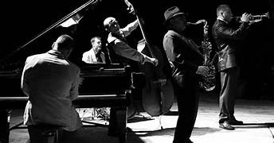

Tokoh Musik
Dunia musik penuh ekspresi dan inspirasi. Biografi musisi memperlihatkan perjuangan hidup, karya besar, dan pengaruhnya bagi dunia.
Buka Profil
Tokoh Olahraga
Atlet hebat lahir dari disiplin dan kerja keras. Kisah mereka mengajarkan arti perjuangan dan sportivitas.
Buka ProfilTokoh Politik
Tokoh politik membentuk bangsa. Biografi mereka memberikan wawasan tentang kepemimpinan dan perjuangan.
Buka Profil